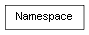

class cymel.utils.namespace.Namespace¶

-
class
cymel.utils.namespace.Namespace¶ ベースクラス:
unicodeMayaネームスペースクラス。
カレントネームスペースを制御するコンテキストとしても使用できる。
文字列の派生クラスなので、通常の文字列のように振る舞う。
それがMayaに実際に存在するかどうかにかかわらず、 インスタンスは生成できる。 そして、カレントにする際などに存在しなければ生成される。
イミュータブルである文字列としては、 Mayaの相対ネームスペースモード如何にかかわらず、 常に : で始まる絶対名で扱われる。
警告
カレントネームスペース設定時、 Mayaの相対ネームスペースモードの設定による挙動の違いには注意が必要。
- ノード生成は、相対ネームスペースモード設定にかかわらず、 カレントネームスペースでの命名となる。
- ノード名の評価や指定は、相対ネームスペースモード設定が有効でないと、 カレントネームスペース指定の影響はない。
本クラスにおけるネームスペースのハンドリングは、ノード生成ではないため、 相対名が有効に機能するのは相対ネームスペースモードが有効な場合のみである。
Methods:
absolute()カレント設定に依存しない絶対名であり、このネームスペースの文字列そのもの。 children([internal])子ネームスペースのリストを得る。 create()ネームスペースを生成する。 current()カレントネームスペースを得る。 exists()ネームスペースが実際に存在するかどうか。 isCurrent()ネームスペースがカレントかどうか。 iterBreadthFirst()ネームスペース階層を幅優先反復する。 iterDepthFirst()ネームスペース階層を深さ優先反復する。 ls([pattern])このネームスペース直下のノードのリストを得る。 name()Maya の相対ネームスペースモードの影響のもと、相対名を得る。 parent()親ネームスペースを得る。 relative()カレントネームスペースからの相対名を得る。 relativeMode()相対ネームスペースモードが有効かどうか。 setCurrent()ネームスペースをカレントにする。存在しない場合は追加される。 setRelativeMode(state)相対ネームスペースモードをセットする。 Methods Details:
-
children(internal=False)¶ 子ネームスペースのリストを得る。
パラメータ: internal (bool) -- Mayaのシステムネームスペースを除外しない。 戻り値の型: list
-
create()¶ ネームスペースを生成する。
-
isCurrent()¶ ネームスペースがカレントかどうか。
-
ls(pattern='*', **kwargs)¶ このネームスペース直下のノードのリストを得る。
パラメータ: 戻り値の型:
-
name()¶ Maya の相対ネームスペースモードの影響のもと、相対名を得る。
相対ネームスペースモードが ON の場合はカレントネームスペースから、 OFF の場合はルートネームスペースからの相対名となる。
戻り値の型: str
-
setCurrent()¶ ネームスペースをカレントにする。存在しない場合は追加される。